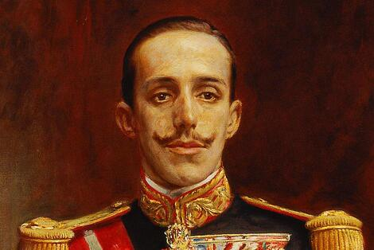
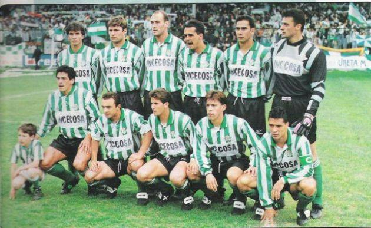
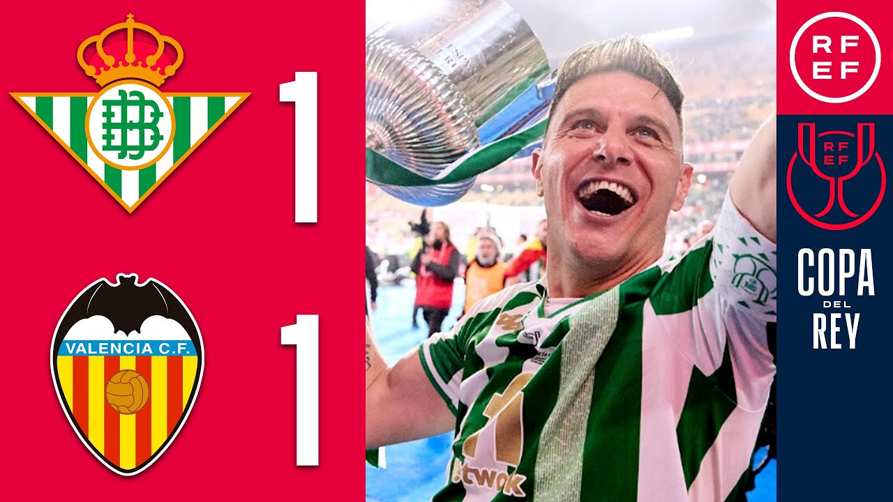
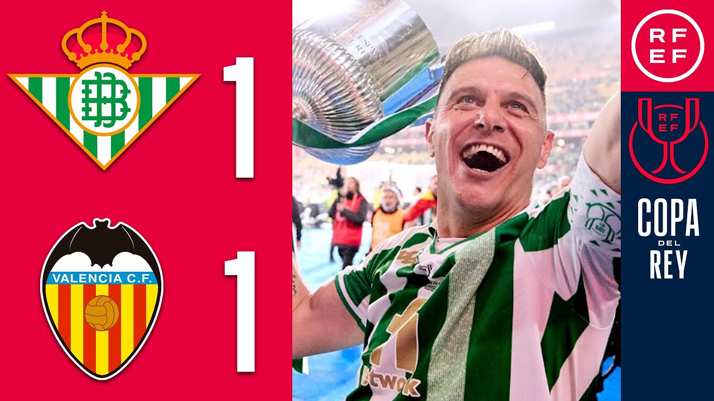

El dia 1 de febrero el club se federo por primera vez
En el año 1910 el Balompie se dio a conocer debido a que gano su primer titulo llamado Copa de Sevilla, que renovo el titulo durante los años 1911 y 1915
En el año 1914 el Balompie inicio los tramites con el Betis Fotball-Club para una fusion.El Rey Alfonso XIII les concedio el titulo "Real"
El dia 1 de febrero el club se federo por primera vez
En el año 1910 el Balompie se dio a conocer debido a que gano su primer titulo llamado Copa de Sevilla, que renovo el titulo durante los años 1911 y 1915
En el año 1914 el Balompie inicio los tramites con el Betis Fotball-Club para una fusion.El Rey Alfonso XIII les concedio el titulo "Real"
Este es el Rey Alfonso XIII.

 Con la llegada de los antiguos fundadores en el 1926 ganan la copa Spencer y en el año 1928 consiguieron ganar la copa Andalucía
El dia 17 de febrero de año 1928 es un dia muy recordado por toda la gente del betis ya que el primera vez llamado "REAL BETIS BALOMPIÉ" empieza su andada por Segunda División con el objetivo de ascender a primera
Con la llegada de los antiguos fundadores en el 1926 ganan la copa Spencer y en el año 1928 consiguieron ganar la copa Andalucía
El dia 17 de febrero de año 1928 es un dia muy recordado por toda la gente del betis ya que el primera vez llamado "REAL BETIS BALOMPIÉ" empieza su andada por Segunda División con el objetivo de ascender a primera
1930-1947: La edad de oro y hundimiento
Con la llegada de los años 30 los términos «Betis» y «béticos» sustituyeron al de «Balompié» y «balompedistas» en el habla popular. El 28 de abril de 1935 está escrito en la historia del club verdiblanco: el Betis venció por 0-5 en Santander y se hizo con el título de Liga; era sábado de Feria, y la fiesta se trasladó al recinto ferial, donde la noticia se dio a conocer en las pizarras de las casetas. Las consecuencias de la Guerra Civil fueron demoledoras para el Betis, que además cometió el error de volver a la competición en la temporada 1939-40, cuando podría haber solicitado la moratoria que se aplicó a otros clubes cuyos estadios se usaron para «necesidades de la guerra».1947-1958: Los años del "manquepierda"
En estos años el Real Betis Balompié no gano muchos titulos pero en los años 50 desperto la símpatia de toda España bajo el sub nombre de "Viva er beti manque pierda"En el año 1950 el betis gracias a su aficion conseguira volver a la Seguna Division Española de futbol. Una vez conseguido el logro de volver a Segunda muy pocos dudarian en que volverian a Primera Division pero no fue hasta cuatro años despues que volverian a retomar el legado que dejaron
1977-1992: La Copa del Rey
El 25 de Junio de 1977 el Betis se proclamó Campeón de la I Copa del Rey en el Estadio Vicente Calderón.
El Betis, que había sido el penúltimo Campeón de Liga antes de la Guerra , se convierte en el primer Campeón de España bajo la denominación de "Copa del Rey", en una época de la historia que coincidió con sus peores años. Ese mismo año, llegó a Cuartos de Final de la Recopa de Europa tras dejar en el camino al Milan, en esa misma temporada desciende inesperadamente a Segunda División.
Desde entonces y hasta 1992, el Betis atravesó un periodo de crisis económica y deportiva.
1992-2010: Real Betis Balompié, Sociedad Anónima Deportiva
Tras la marcha de Serra, el Betis pasa por un periodo de inestabilidad que le lleva a descender en el 2000. Pero no duraria mucho en Segunda ya que la temporada siguiente ascenderia como campeon de la categoria de plata que le ayudaria a classificarse a la Copa de la UEFA, la falta de continuidad lo llevará a dos años mediocres hasta que se produce la vuelta de Serra. se convirtió en el primer equipo andaluz que se clasificó para disputar la Copa de Europa bajo el formato de Liga de Campeones al superar en la eliminatoria previa al AS Mónaco. Serra no es renovado, y supone el arranque de una crisis que coincide con la imputación del máximo accionista Manuel Ruiz de Lopera por presunto delito societario.
Este equipo fue el vencedor contra el monaco

2018-2021: Europa y crecimiento en tiempos de pandemia
Esa temporada 2017-18 se elevó de manera significativa el valor económico y deportivo de la plantilla profesional del Real Betis con fichajes tan destacados como, entre otros, los de los jugadores Andrés Guardado, Cristian Tello, Zou Feddal, Antonio Barragán, Ryad Boudebouz y Javi García.
Los mejores ficahjes fueron Cristian Tello, Andres Guardado, Javi García.
El último encuentro con público en el Villamarín fue un Real Betis-Real Madrid disputado el 8 de marzo de 2020 y que concluyó con victoria verdiblanca por 2-1.
Manuel Pellegrini, sin ninguna duda, el gran líder de esta navegación de altura, y en la calidad de una plantilla que se vio reforzada por la llegada del veterano y exitoso Claudio Bravo, el joven Juan Miranda y los ya experimentados en el campeonato liguero Víctor Ruiz y Martin Montoya,
2022: La tercera Copa del Rey
la temporada 2021-22 en la que el Real Betis revalida de nuevo su participación en las competiciones europeas, al quedar clasificado en 5 posición en el Campeonato Nacional de Liga, y en la que, sobre todo, alcanza el gran éxito de proclamarse Campeón de la Copa del Rey por tercera vez en su historia, 17 años después de su última gran conquista.
Hasta la actualidad que sigen peleando en puestos europeos
2018-2021: Europa y crecimiento en tiempos de pandemia
Esa temporada 2017-18 se elevó de manera significativa el valor económico y deportivo de la plantilla profesional del Real Betis con fichajes tan destacados como, entre otros, los de los jugadores Andrés Guardado, Cristian Tello, Zou Feddal, Antonio Barragán, Ryad Boudebouz y Javi García.Los mejores ficahjes fueron Cristian Tello, Andres Guardado, Javi García.
El último encuentro con público en el Villamarín fue un Real Betis-Real Madrid disputado el 8 de marzo de 2020 y que concluyó con victoria verdiblanca por 2-1.
Manuel Pellegrini, sin ninguna duda, el gran líder de esta navegación de altura, y en la calidad de una plantilla que se vio reforzada por la llegada del veterano y exitoso Claudio Bravo, el joven Juan Miranda y los ya experimentados en el campeonato liguero Víctor Ruiz y Martin Montoya,
2022: La tercera Copa del Rey
la temporada 2021-22 en la que el Real Betis revalida de nuevo su participación en las competiciones europeas, al quedar clasificado en 5 posición en el Campeonato Nacional de Liga, y en la que, sobre todo, alcanza el gran éxito de proclamarse Campeón de la Copa del Rey por tercera vez en su historia, 17 años después de su última gran conquista.
Hasta la actualidad que sigen peleando en puestos europeos